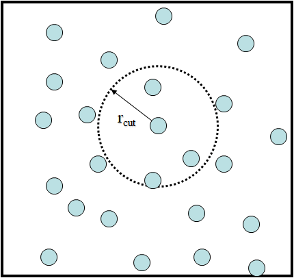
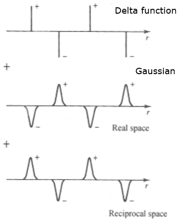

Distance cutoffs and Ewald sums¶
Recall that the non-bonded interactions are determined by summing up all possible pairs of atoms in the system. Quite often this is not feasible, and indeed, calculation of pair-wise interactions is one of the major bottle neck in molecular simulations.
In practice, only the atoms that are within a certain distance, call the cutoff distance, \(r_{cut}\), are considered in the calculations. Anything beyond the \(r_{cut}\) will be ignored.
{kind=link}

Cutoffs in vdw interactions
The LJ potentials decay (in ~ \(r^{-6}\)) asymptotically to zero at large distances. By simply ignoring the potentials beyond the \(r_{cut}\) will introduce a discontinuity in the force calculations and may introduce strange behaviour in the dynamics.
However, this behaviour maybe negligible if \(r_{cut}\) is large enough. In practice, \(r_{cut}\) is set to 10-15 anstroms. There are different ways to minimise the discontinuity:
- Use of some sort of long-range correction, assuming a uniform density in the system.
- Shift the whole function to zero at \(r_{cut}\). This is simple and convenient, but does it alter the chemistry, consider the well depth has also been shifted correspondingly?
- Use of a smoothing function. This function would normally activate around \(r_{cut}\) and naturally smooth the function to zero at \(r_{max}\). For example, the use of the sine smoothing function with the following conditions:
{kind=link}
{kind=link}
Note
For molecular systems with periodic boundary conditions, the value of \(r_{cut}\) set must not be larger than half length of the smallest box dimensions. Otherwise, the minimum image convention cannot be applied to determine the distances between pairs of atoms for potential and force calculations.
Cutoffs in electrostatic calculations
Unlike the LJ functions, the Coulombic function decays as \(r^{-1}\) so that discontinuity would be more pronounced even at large distances. In addition, the decay is also conditionally convergent, of which the results depend on the order of summation. This means the usual cutoff tricks for vdw interactions are not applicable and, in periodic systems, all charges would need to include in periodic images.
{kind=link}
One way to solve this is the use of Ewald summation. This method converts the summations that converges rapidly and absolutely in the Fourier space.
It offers a solution to solving the full electrostatic problem by splitting it into two parts: one in real space and the other in the reciprocal space.
In real space, complying with the usual cutoff concept, a convenient screening function (a Gaussian charge cloud) is added around all (delta-like) charges of opposite signs to make their interaction decay very fast at \(r_{cut}\).
The added screening functions can then be substracted in reciprocal space due to the boundary condition by using Fourier transforms.
Finally, the completed Ewald sum requires an additional correction, known as the self energy correction, which is a constant, that arises from a Gaussian acting on its own site.
In summary, the Ewald’s method replaces a potentially infinite sum in real space by two finite sums: one in real space, one in reciprocal space, and the self energy correction. The precision of the Ewald sum is controlled by three parameters: the \(r_{cut}\), the convergence parameter \(\alpha\) and the largest reciprocal space vector, \(k_{max}\).
| TIP: | In DL_POLY, the three Ewald parameters can be automatically determined by using the following directive in the CONTROL file: ewald precision 1d-6 The quickest check on the accuracy of the Ewald sum is to compare the coulombic energy (U) and its virial (v) shown in the OUTPUT or STATIS files, where U = -v. |
|---|